On thursday I went to Guimareas. We got a train there. The train took more than an hour. We saw the old town. First we saw an old church that is now a museum, it had a lot of the towns history going back around a thousand years. After that, we explored an old palace. Next we saw a castle that was very old. Before going home, my mum bought me a big ice-cream, the flavours were strawberry and chocolate. Then we went home by train.
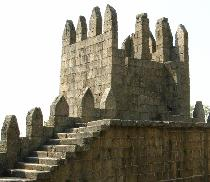 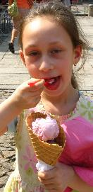
On Friday my family and I woke up a bit late at 8.15am, and went to breakfast. I had muesli and yogourt. I have collected about 13 yogourt lids. I collect them because they each have Portugese writing on them. After that, I had a cup of tea, fruit and toast with marmalade. Next we walked to the Metro station and showed my dad the short cut, and got a train to go to the old town of oporto. When it was lunch I had some olives and two sandwiches with fig and another with tomato. The fruit and tomatoes are very nice in Portugal. After lunch we went to the beach but it wasn't beach weather and I got quite wet and sandy. Later we walked to a castle and looked down so we could see the sea.
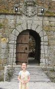 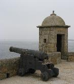
Next we went to a big park that had a pond. We had some stale bread to
feed the ducks. My dad noticed that there were some geese about and he
said it would be a good idea not to feed the duck near them otherwise
they would come over. So we walked as little further to feed the ducks,
we had just started to feed the ducks when.....
the geese spotted us! They came stampeding over, honking and flapping
their wings wildly...we had to run to get away. I saw two rabbits, one
was big and white and I got really close, the other was a little grey
one and I didn't get so close. We even found some pine nuts. Dad found
a stone a smashed the shell, mum and I peeled them and we had a little
picnic of about 3-4 nuts each. Then we caught a bus home.
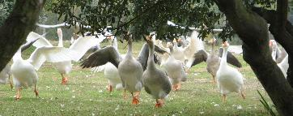 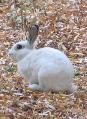
After dinner my mum read the last chapter of Harry potter's The Philosophers stone. I felt so excited that I messed my bed up and had trouble sleeping.
Today we left Portugal and flew to Madrid. I felt a bit queazy but didn't vomit on landing. We got underground trains to Madrid and met the person that gave us the keys to our own apartment. The apartment is nice. I have a nice room that my mum and dad share with me. A friend of mum's from london came and stayed with us for two nights. Mum cooked us dinner for the first time in ages.
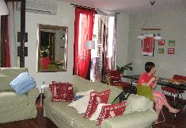
On Sunday we got up a bit late, had an easy morning and the walked to Sol to meet a friend of my parents who is in Madrid for September and is from Israel. We had a drink with him and walked around, mum's friend was with us too. We went to the museum Reina Sofia, and I recognised Picasso paintings that I had seen at school when we had art with sia the art teacher. My dad pointed out a famous picasso painting called Guernica. I also recognised some Miro and saw some other art that had lots of little ants (The dream by Dali). Then we found a vegetarian restaurant and I shared with mum. Then we went back home.
On Monday I got up quite late and had breakfast. Next my mum and I had a shower together and we all walked to a playground. I went on the swings for nearly an hour. We went to a place called plaza espana where there was a statue of a famous story of a man with a horse and his helper. We also saw an ancient egyptian temple. After we had lunch, and we went for a walk to see mum's off, she left by train to catch a plane. On the way home we bought some dessert. After dinner I had some dessert, it was yummy.
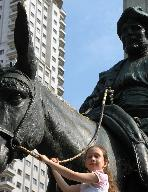 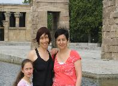 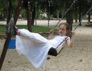
On Tuesday I walked to a very big park it was called Retiro. First I went to a playground. I first went on a skateboard ride, it had a bar you could hold on to while skating sideways. Next mum and I fed some ducks and there were no geese around! We fed them stale bread. After we had a picnic. After that we looked around a bit more at the park. We went to Mike's for a yummy dinner.
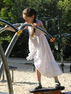 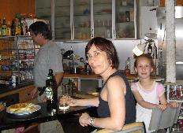